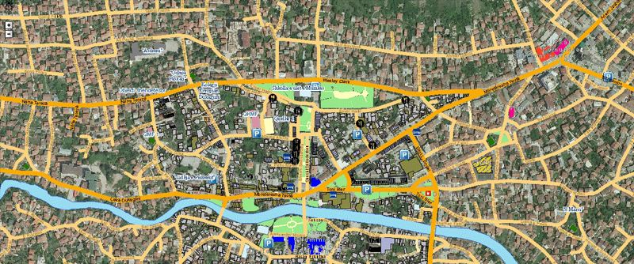

Scope
- Data acquisition and digitisation
- Data management and maintenance
- Data conversion and integration
- Data validation and processing
- Analyses and evaluations
- GIS project management
- System integration (EAI)
- Data and services hosting / mash-up
- Development and programming of geo components
- Design of geo infrastructures
- GIS operation (outsourcing)
